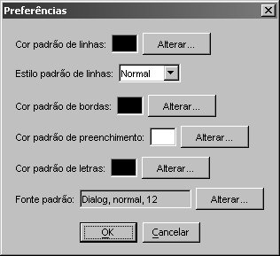

Você pode querer fazer com que os elementos de suas ontologias já tenham uma cor pré-definida, ou um tipo de letra pré-definida. Para isso foi feito o diálogo de preferências, onde você pode fazer tais operações.
Há duas maneiras de abrir o diálogo de preferências:
Na barra de menus, clique em Editar e, em seguida, “Preferências”;
No teclado, segure a tecla Alt e tecle P.
O diálogo de preferências é o abaixo. Nele, você verá 6 opções. Basta clicar em “Alterar”, do lado de cada opção. Exceto, é claro, na segunda opção, onde você seleciona em uma lista a opção desejada.

As opções são:
Cor padrão das linhas: define a cor padrão que as linhas (arcos) terão;
Estilo padrão de linhas: define o estilo padrão que as linhas (arcos) terão: reta, ortogonal ou curva;
Cor padrão das bordas: define a cor padrão da borda de conceitos e exemplos;
Cor padrão de preenchimento: define a cor padrão do preenchimento de conceitos e exemplos;
Cor padrão de letras: define a cor padrão das letras dos elementos;
Fonte padrão: define as fontes (tipos de letra) padrão dos elementos.
Após selecionar as opções desejadas, clique em OK. A partir disso, todos os padrões que você definiu estarão funcionando.